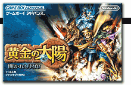
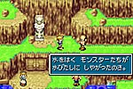
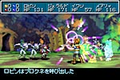
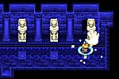
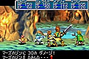

|  | ||||
■任天堂ファンにはスポーツゲームで有名なキャメロットの新作。『マリオテニス64』や『モバイルゴルフ』にハマった人たちは、ワクワクして待っていたんじゃないかな？ これぞ夏休みにふさわしい、期待のＲＰＧです。 ■主人公は、あるかくれ村に住む少年。あるとき、村に大岩が落ちてきて、村の人が何人も被害にあいます。その３年後、あやしい錬金術師たちが世界を構成するエレメントを奪い、さらに村の少女をさらいます。少女を救うため、さらには世界を救うため、少年は旅に出ます。 ■さて、このＲＰＧ、ちょっとシステムが個性的なんですよね。主人公とパーティの子たちはエナジーという能力を使えるんですが、これは魔法のようなもので戦闘のときにバンバン使っていいんです。普通の戦闘と要領が違うので、最初はちょっととまどったんです。でも、そのうちコツを覚えてきました。召喚とかも使えば使うほど戦闘が有利になるので、ガンガン使うほうがいいんです。コツコツ相手のＨＰを減らすより、大技で効率よく敵をたたくのがいいみたい。といっても、エナジーポイントも限りがあるから、ちゃんと戦略も考えなくちゃダメなんですけどね。この戦闘ならアクション並みにスカッと遊べますね。アクションゲームが好きな人にも、ぜひプレイしてもらいたいです。 ■うれしいのが、旅の途中で使えるエナジーもあるっていうこと。ＲＰＧっておもしろいんだけど、戦闘を重視すると旅の途中が面倒だし、旅を重視すると戦闘がうっとおしい。そう思うことってありませんか？ このゲームでは町に寄ったり、ダンジョンの戦闘以外の部分でも謎解きやアクションがあっておもしろいんです。たとえば、主人公である私は大きい岩を動かす「ムーブ」というエナジーをもっているんだけど、「あ、ここで使えばいいんだ」という場面がたくさん出てきて楽しい。自分でお話を読み解いていく充実感があるんですよね。 ■また、ジンという存在と戦って仲間にすると、能力もアップします。このジンは動物のカタチをしているので、欲しくなってどんどん集めちゃう。すっごいかわいいデザインなんですよ。それから、個人的にうれしかったのが、昔見たファンタジー映画に出てきたような場面がいっぱいあること。洞窟に入ると鉱石がキラキラ光っていたり、大きな木をどんどんのぼっていけたり。お父さん、お母さんも懐かしくプレイできるんじゃないかな？ ■冒険のテイストがいっぱい入っているから、夏休みにはピッタリ。『黄金の太陽』で不思議な旅を満喫してみてくださいね！ |
||||
|
|